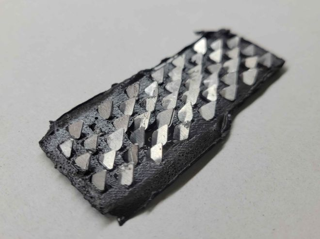
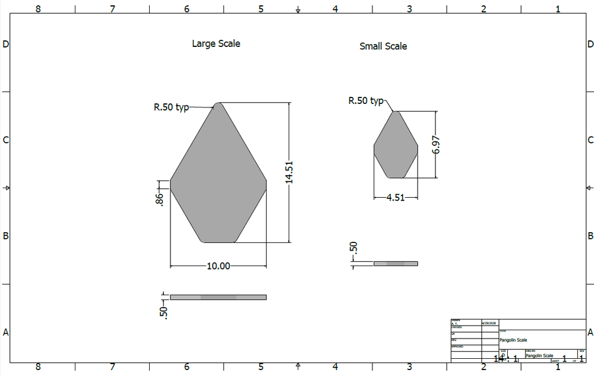
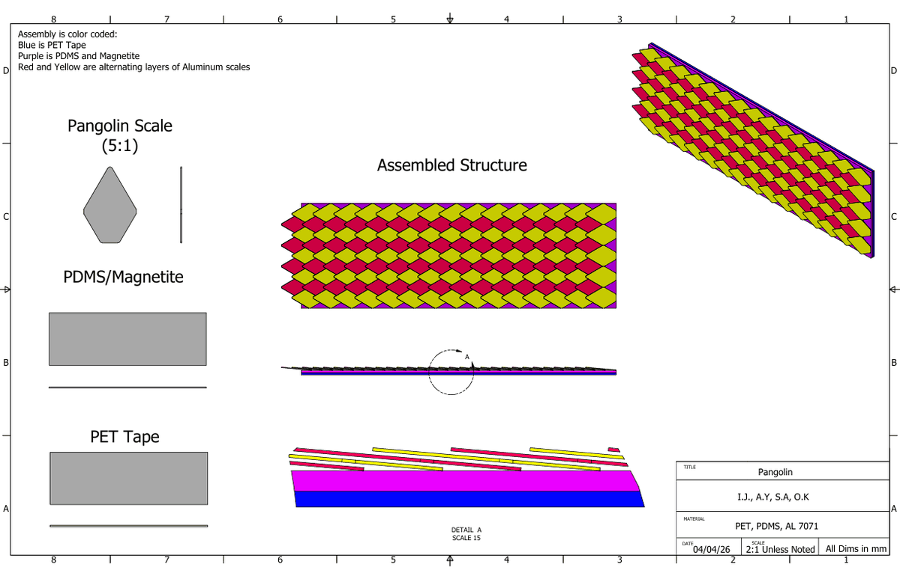
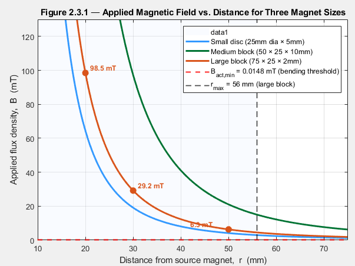
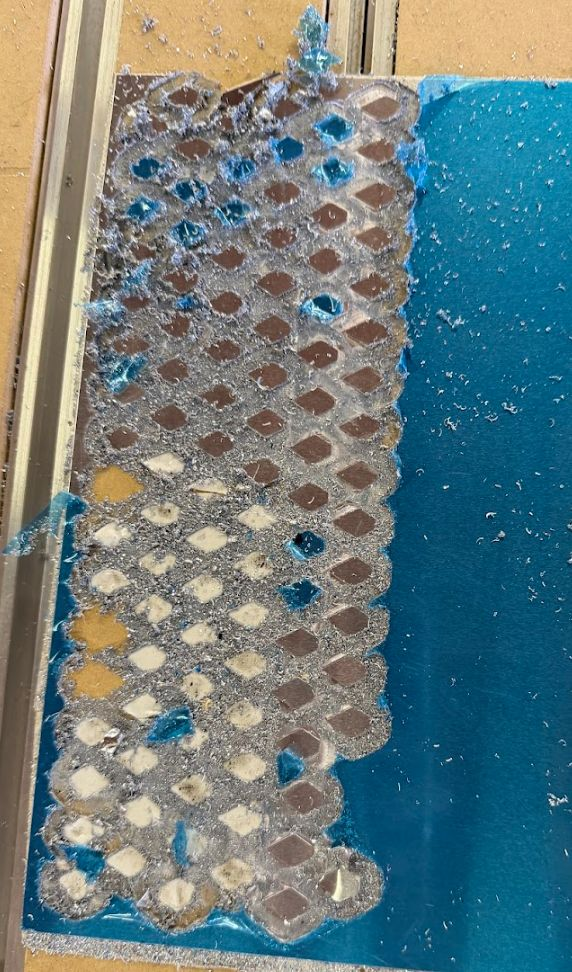
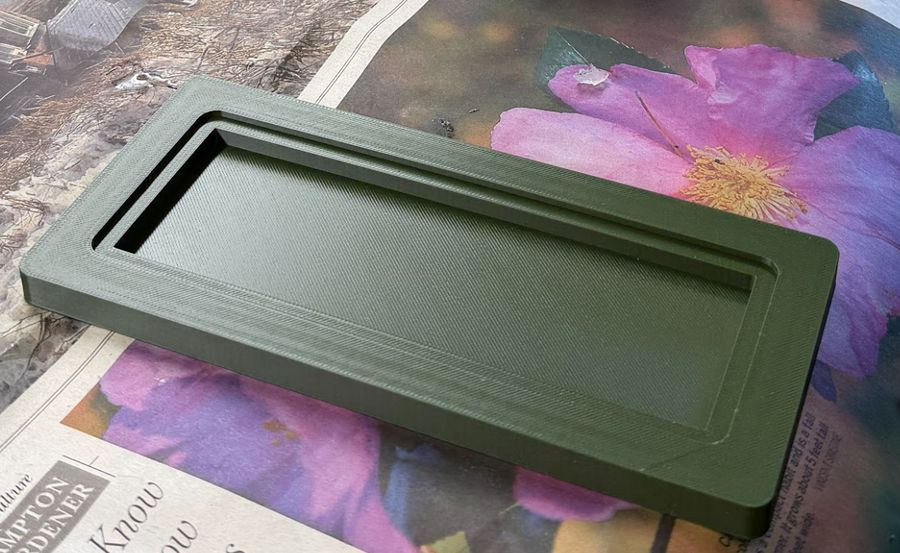
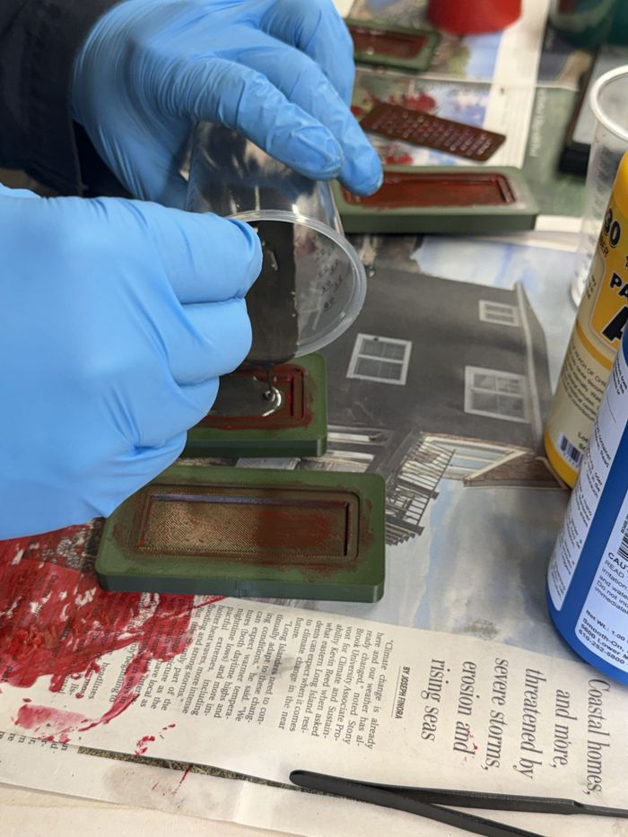
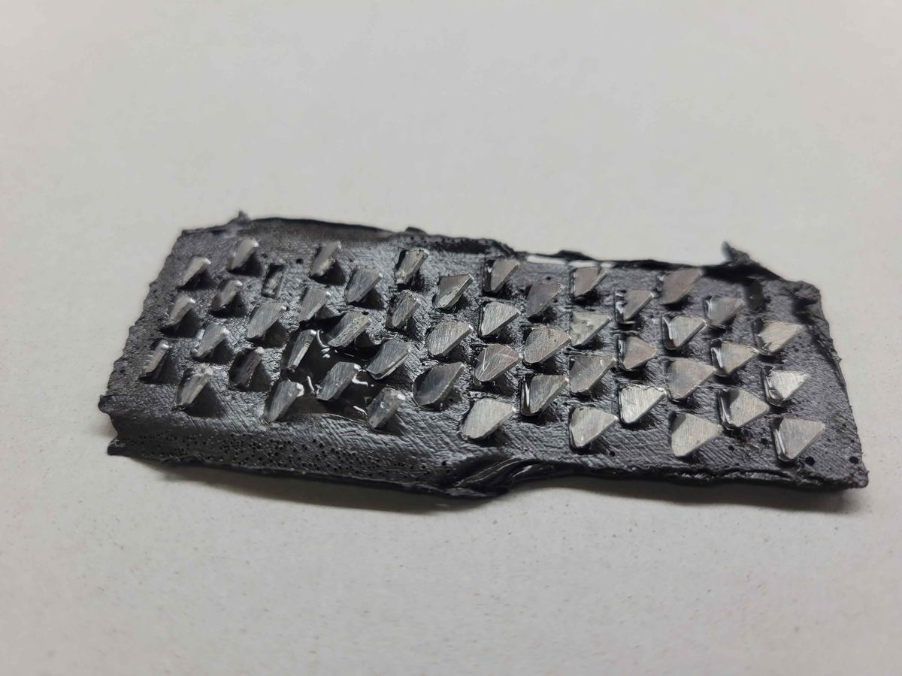
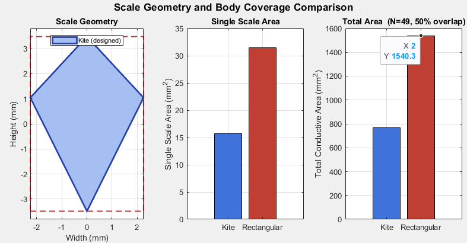
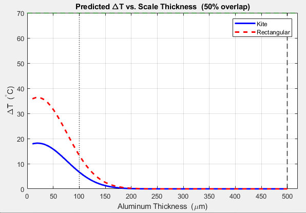

Pangolin-Inspired Magnetic Soft Robot for Hemostasis
An untethered soft robot, steered by external magnets, meant to travel through the small intestine and stop bleeding by heating tissue. We redesigned its aluminum scales from rectangles to a kite shape like a real pangolin's, so it can bend in more than one direction, then built and tested a working magnetic prototype.

- Course
- MEC 520, Stony Brook (Prof. Yao)
- Team
- 4 students: Sahil Aggarwal, Ishaan Jain, Omar Khan, Andrew Yancovitz
- Completed
- May 2026
- Tools
- CAD, CNC machining, 3D printing, MATLAB
Results at a glance
The problem
Untethered magnetic robots are driven by magnetic fields from outside the body, with no battery or wire, which makes them promising for minimally invasive surgery. Soon et al. (Max Planck Institute, 2023) built a pangolin-inspired robot: a magnetic silicone body covered in overlapping aluminum scales that heat up under a radio-frequency field, so it can cauterize tissue on demand.
Their rectangular scales lock against each other along their straight edges, so the robot can only curl about one axis. The small intestine is long and lined with dense circular folds, so a robot that only bends in one plane struggles to reach a bleeding site. Our goal was a scale design that allows multi-axis bending.
Requirements
| Requirement | Target | Prototype scope |
|---|---|---|
| Size | About 20 × 10 × 0.2 mm, to fit a "0" gelatin capsule for oral delivery | Built larger for student fabrication |
| Locomotion | Driven by an external magnetic field through fluid-filled environments | Magnetic response tested |
| Heating | Joule heating in the overlapping aluminum scales | Simulated, not built |
| Multi-environment | Keep working across environments | Tested in air and water |
Scale redesign

| Criterion | Rectangular (Soon et al.) | Kite (our design) |
|---|---|---|
| Bending freedom | Single axis, longitudinal curl only | Longitudinal and transverse: angled edges let scale corners rotate past each other |
| Edge contact | Full-length line contact resists lateral bending | Point contact at the corners only |
| Bond stress | Sharp 90° corners | R0.50 mm fillets reduce stress at the scale-to-silicone bond |
Materials
- Body: Ecoflex silicone. Softer than the original PDMS, so the enlarged prototype bends under practical fields. Started with 00-10, then moved to 00-30 for the strength to hold the scales.
- Magnetic filler: NdFeB microparticles. A hard magnetic material that keeps a programmed magnetization profile, enabling shape-morphing under a rotating field.
- Scales: 5052 aluminum, 0.5 mm. Highly conductive for RF heating and non-ferromagnetic, so it doesn't interfere with actuation. Thicker than the original 100 µm so it could be CNC machined.
- Molds: PETG. Chosen over PLA because its glass transition (~80–85 °C) stays above the oven cure temperature, so the mold doesn't warp.
Design and analysis

Before building, we checked analytically, with MATLAB, that the small-scale prototype could be magnetized, would bend, and could be steered:
| Parameter | Value |
|---|---|
| NdFeB particle mass (10% by volume) | 2.85 g |
| Minimum programming field / full saturation field | 0.729 T / 2.01 T |
| Robot magnetic moment | 0.276 A·m² |
| Flexural rigidity, Ecoflex 00-30 body | 1.15 × 10−6 N·m² |
| Minimum field for visible bending (10 mm tip deflection) | 0.015 mT |
| Actuation torque at 20 / 30 / 50 mm | 27.2 / 8.1 / 1.7 mN·m |
| Maximum steering range (force > robot weight) | 58 mm |
| Minimum bending radius | 8.0 mm |

Fabrication



Prototype 1: learning what breaks
A large-scale (about 150 × 50 mm) proof of concept, with one body holding scales and one holding discrete magnets. The scales bonded well, but the silicone stuck to the PETG mold and tore during demolding, and the one-hour cure was not long enough.
Fixing the cure time with heat transfer
Rather than guess, we back-calculated the activation energy of the silicone cure from two data points (4 hours at 23 °C and 25 minutes at 70 °C), giving Ea ≈ 40.6 kJ/mol. Arrhenius kinetics put the cure at about 39 minutes at 60 °C. A Biot number of 1.23 showed the thick PETG walls add real thermal lag, about 39 minutes of conduction time. The total of about 78 minutes, rounded to 90, explained the failure and worked on the next build.
Prototype 2: working magnetic robot
Scaled down to a 75 × 25 × 2 mm body in Ecoflex 00-30 with NdFeB particles, mold release applied, and cured for 90 minutes at 60 °C. It demolded cleanly with about 47 scales in place.

Testing
- Magnetic response: with a small 95 lb pull magnet, the robot held its own weight by magnetism alone, and was pulled to the magnet from 11 mm away while hanging. This shows the particle loading is enough for locomotion.
- Durability: after a week submerged in water, the robot was strained in-plane and bent to mimic actuation. No scales came loose, and it still responded magnetically.
Heating trade-off analysis
The RF heating hardware was out of scope, so we modeled it from the original paper's data. The kite shape has half the area of a rectangle with the same outer dimensions, so it covers 41.1% of the body with conductive material versus 82.1%. At 50% overlap and the target 100 µm thickness, the predicted rise is about 18 °C per scale versus about 36 °C for rectangles. That is a fixed factor-of-two penalty, which we accepted in exchange for multi-axis bending.


Limitations and next steps
- The robot was not magnetically programmed (poled), since the required field of about 2 T wasn't available. We designed a curved poling mold to give it a varying magnetization for rolling locomotion.
- RF heating and full locomotion were not demonstrated. The prototype is a mechanical and magnetic proof of concept.
- To recover heating: switch to 100 µm aluminum, increase scale overlap, and consider insulating layers or other scale materials.
Built on: R.H. Soon et al., "Pangolin-inspired untethered magnetic robot for on-demand biomedical heating applications," Nature Communications 14, 3320 (2023). doi:10.1038/s41467-023-38689-x